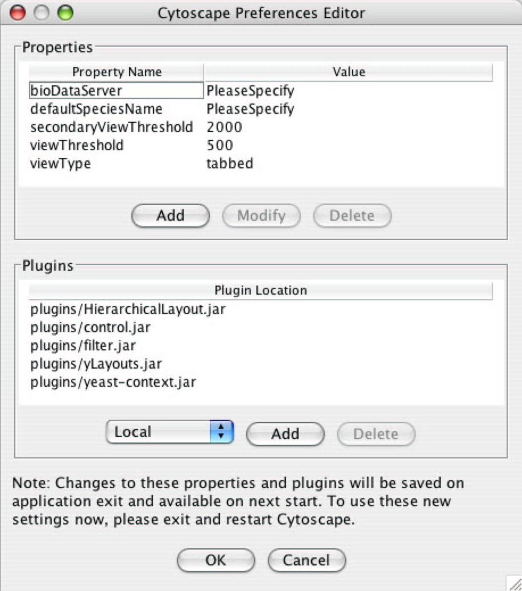

The Cytoscape Preferences Dialog, accessed via Edit->Preferences…, has sections for general properties display/editing and plugins specification via the properties mechanism. Preferences in Cytoscape are stored in the form of Java properties specified in the cytoscape.props file located in the users’ working directory, home directory or Cytoscape distribution directory. This file is automatically loaded at startup time and written upon normal exit of the application.
Cytoscape properties are displayed in the Properties section of the dialog. These properties are configurable via Add, Modify and Delete operations.
The specification of plugins to be loaded into Cytoscape at startup time is also supported in cytoscape.props and accessible in this dialog under the Plugins section. In this special case, the plugins property specifies a comma-separated list of jar files or URLs to jar files containing plugins. This property is parsed into its constituents and presented and managed in the Plugins table, as at left.
Some common properties are described below.
|
Property name |
Default value |
Valid values |
Related command line argument |
|
defaultSpeciesName |
PleaseSpecify |
species names this value must match the name in the first line of the file specified in the bioDataServer’s manifest for synonyms e.g., for yeast synonyms, specify Saccharomyces cerevisiae |
-s -species |
|
bioDataServer |
PleaseSpecify |
annotation/manifest, and other manifest file locations |
-b -BDS |
|
viewThreshold |
500 |
integers > 0 |
-vt --VT |
|
secondaryViewThreshold |
2000 |
integers > 0 |
|
|
viewType |
tabbed |
tabbed |
|
|
plugins |
|
comma-separated list of jar files containing plugins, or URL’s to jar files containing plugins (e.g., http://server/my-plugin.jar) |
-p -plugin --JLD --JLW --JLL |
Cytoscape also honors a new Java system property introduced in Java 1.4: java.awt.headless. This property allows the Java system to run without Graphics support; Cytoscape running in this mode allows users to run non-graphical analyses as batch jobs or on systems without keyboard/mouse/display capabilities, such as compute servers.
-Djava.awt.headless=[ true | false ] Similar to command line argument –headless | -noView; run in headless mode, do not create and display the GUI
{kind=link}